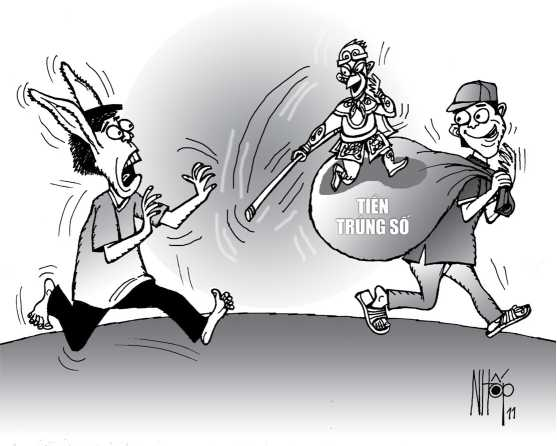

Tòa án nhân dân tỉnh Sóc Trăng mở phiên tòa dân sự phúc thẩm ngày 19-11-2002 để xét xử vụ kiện đòi lại tài sản giữa nguyên đơn NVT đối với bị đơn HVL. Hai nhân chứng Huỳnh Văn Hải, đạp xe lôi và Trần Ngọc Dũng, bán vé số được gọi ra làm chứng cùng có mặt tại tòa.
Nguyên đơn T khai: Sáng 14-5-2001, ông có mua của anh Trần Ngọc Dũng một tờ vé số do Công ty xổ số tỉnh Cà Mau phát hành, mang số 89372. Hôm sau, thấy đại lý vé số dựng bảng ghi kết quả xổ số Cà Mau, ông lấy vé ra dò. Chưa kịp dò thì có khách gọi ông chở đi. Ông đưa tờ vé số nhờ anh L, một bạn đạp xe lôi, dò giùm. Phần ông, ông đi chở khách.

.Khi trở lại, ông không thấy anh L đâu cả. Gần trưa hôm ấy, giới xe lôi đồn rùm ông T trúng được một tờ độc đắc 50 triệu đồng bởi anh Dũng bán vé số cho biết như vậy. Hoảng hồn, ông T đi tìm anh L hỏi tấm vé của mình nhờ dò giùm đâu. Anh L trả lời: Tấm vé ấy trật lất, đã xé bỏ; còn tấm vé của anh L mua từ một người ở Bạc Liêu lên bán mới trúng giải đặc biệt!
Ông T đưa bằng cứ trước phiên phúc thẩm, chứng minh rằng tờ vé số trúng là của ông mua. Sáng hôm 14-5, khi ngồi uống cà phê với anh Huỳnh Văn Hải, cũng là dân đạp xe lôi, ông có kể với anh Hải chuyện đêm qua ông nằm mơ thấy một con khỉ bay qua bay lại. Cả hai người cùng nhất trí cao rằng con khỉ ấy là ông... Tề Thiên đại thánh!
Anh Hải bàn: “Sách vở nói rằng Tề Thiên đại thánh có 72 phép biến hóa thần thông. Ông nằm mơ thấy Tề Thiên đại thánh bay qua bay lại thì nên mua một tờ vé số có số đuôi 72, biết đâu được đại thánh chiếu cố đến cảnh nghèo của ông” Vừa lúc đó, anh Dũng xuất hiện, cầm một xấp vé số Cà Mau mời ông T mua. Liếc thấy tấm vé mang số 89372, ông T lấy ngay một tờ.
Ba người tiếp tục bàn chuyện... Tề Thiên bay. Người ta thường nói là “bay lượn”, bởi có bay thì phải có lượn. Mà lượn tức là... lộn nhào! Cho nên theo ba người, hễ có bay thì phải có... lộn nhào. Như vậy con 72 có thể lộn nhào ra thành con... 27! Ông T cũng có ý định mua thêm một vé có số đuôi 27 nhưng tiếc là không ai có. Thôi thì ông khiêm tốn ôm một “ông” 72 vậy. Biết đâu... con khỉ ốm nhách đó thương ông.
Trong phiên xử sơ thẩm, Tòa án nhân dân huyện Thạnh Trị bác yêu cầu đòi lại tấm vé số của ông T vì tòa cho rằng không có căn cứ. Tòa sơ thẩm tuyên bố tấm vé số trúng là của anh L, buộc ông T đóng án phí dân sự 2,25 triệu đồng. Ức lòng, ông T kháng án, đề nghị Tòa án nhân dân tỉnh Sóc Trăng buộc anh L hoàn trả lại ông số tiền trúng giải đặc biệt mà anh L đã lãnh.
Tại phiên xử phúc thẩm, bị đơn L tiếp tục nại rằng chính anh là người mua tờ vé số Cà Mau mang số 89372 của một người không rõ tên từ Bạc Liêu lên bán. Sáng hôm sau, anh đến chỗ dò vé số, thấy ông T cũng đang dò vé số. Sau đó, ông T vo tròn tờ vé số và liệng xuống đất, rồi đạp xe đi. Riêng tấm vé số Cà Mau của anh, anh dò và trúng được giải độc đắc 50 triệu đồng. Anh mang tấm vé số trúng xuống Bạc Liêu bán cho đại lý, lấy được số tiền 44,5 triệu đồng. Tiền đó là tiền của anh trúng số, anh không đồng ý trả lại cho ông T. Anh phủ nhận chuyện ông T đưa tấm vé số nhờ anh dò giùm.
Qua nghiên cứu hồ sơ, Tòa án nhân dân tỉnh Sóc Trăng nhận thấy trong ba biên bản lấy lời khai và ngay trong phiên xử sơ thẩm, nhân chứng Trần Ngọc Dũng bán vé số xác nhận bốn lần rằng anh có bán cho ông T một tờ vé số Cà Mau mang số 89372. Trước tòa phúc thẩm, anh Dũng khai chính anh đã cùng ngồi với ông T và ông Hải để bàn việc thấy Tề Thiên bay là cứ đánh số 72. Anh Dũng cho biết anh nhận từ đại lý cả thảy 25 tờ vé số mang số 89372, bán cho một người ở Thạnh Trị ba tờ, bán cho ông T một tờ; 21 tờ còn lại anh trả về cho đại lý vì bán không được.
Tòa xác minh, làm rõ việc bị đơn L khai mua tờ vé số của một người từ Bạc Liêu lên bán là không có cơ sở. Công văn của Công ty Xổ số kiến thiết tỉnh Cà Mau gửi Tòa án nhân dân tỉnh Sóc Trăng xác nhận kỳ mở thưởng ngày 14-5-2001, giải đặc biệt chỉ trả thưởng bốn vé. Ngoài ba vé được một người ở Thạnh Trị lãnh, một vé còn lại là do một đại lý ở Bạc Liêu đi đổi. Tờ vé này chính là tờ mà anh L nhờ người đi bán giùm. Anh L không trực tiếp đi bán tờ vé số vì sợ lộ bí mật!
Những chứng cứ mà tòa phúc thẩm điều tra, xác minh được hoàn toàn phù hợp với các lời khai của ông T và hai nhân chứng Dũng vé số, Hải xe lôi. Trong khi đó, anh L không chứng minh được anh là người mua tấm vé số 89372 của anh Dũng hoặc của một ai khác bán cho. Đại diện Viện Kiểm sát nhân dân tỉnh cũng cho rằng lời khai của anh L là không có cơ sở để tin cậy.
Từ đó, Tòa án nhân dân tỉnh Sóc Trăng tuyên buộc anh L phải hoàn trả cho ông T, người đã mua... ông Tề Thiên bay, trị giá tờ vé số trúng đặc biệt số tiền 44,5 triệu đồng. Anh L còn phải đóng 2,225 triệu đồng án phí dân sự sơ thẩm. Bản án chung thẩm, có hiệu lực thi hành.
Tôi viết bài này là nói chuyện tòa án đã giải quyết một vụ án dân sự có lý có tình. Xin bà con đừng lầm tưởng tôi bàn qua... cách đánh số đề rồi hễ nằm mơ hoặc ra đường thấy con khỉ nhảy múa, bay lượn là đánh con 72 nghen bà con. Mình chơi vé số thì được bởi dù trúng trật cũng ích nước lợi dân. Còn chơi số đề nhiều, có ngày rạt gáo!